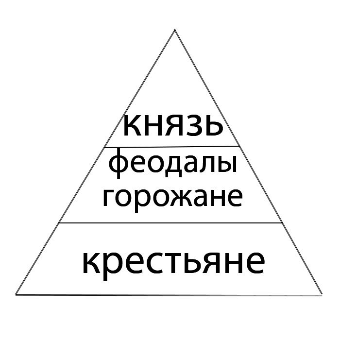
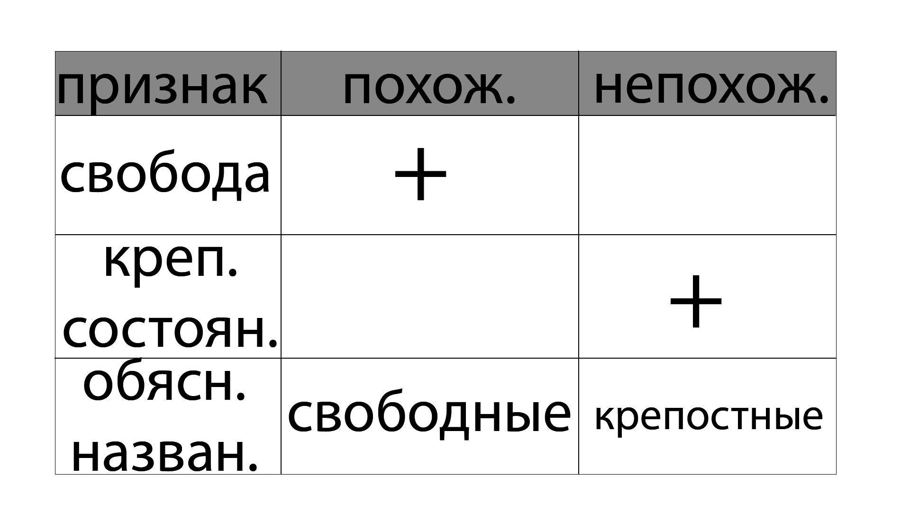

1.Напишите название сословия, представители которого имели такой родовой герб. |
Шляхтичи. |
2.Перечислите факторы, которые позволяли самым одарённым представителям мещанского сословия достигать юольших успехов в политических и хозяйственных делах. |
Образование, финансовая состоятельность, связи, участие в политике, предприимчивость. |
3.Заполните схему "Социальная лестница в ВКЛ." |
|  |
4."Переведите" на понятный язык выдержку из судебного дела относительно взаимоотношений крестьян деревни Грицки Волковысского повета с их землевладельцем. "В уставе земских прав написано, что, если какой человек проживёт у своего пана десять лет, он уже должен быть отчичем" |
Иными словами, это означает, что после долгого срока проживания у своего земельного владельца, крестьянин теряет свою свободу перемещения и обязан оставаться на службе у пана. |
5.Ответьте на вопросы. |
а)Из-за феодальной системы. Паны, как землевладельцы и феодалы, контролировали землю и жителей на ней. Крестьяне были привязаны к земле и не могли свободно уезжать. Они обязаны были отрабатывать определенное количество времени в неделю на земельных участках своего пана – это и была барщина. В обмен на это, крестьяне получали возможность проживать на земле пана и пользоваться его защитой. |
б)Экономическая основа шляхты - владение землей и аграрная деятельность. |
в)Эта поговорка означает, что иногда даже высокопоставленные люди могут выполнять обыденные задачи, как например, заготовка дров. |
6.Выполните задания. |
|  |
Похожие (свободные) были свободными и у них было больше прав, а непохожие - напротив были крепостными. |
7.Объясните причинно-следственную связь. |
Пожалование магдебургского права городам способствовало развитию мещанского сословия. Мещане - это горожане, которые не были ни землевладельцами, ни феодалами, но занимались ремесленным и торговым бизнесом. Магдебургские права предоставляли мещанам правовой статус и защиту их экономической и социальной активности. |
8.Выполните задания. |
а)Справа феодал в дорогом одеянии, а слева худой и бедный крестьянин. |
б)Вероятная причина встречи феодала с крестьянином могла быть связана с урегулированием земельных вопросов, уплатой налогов или решением других хозяйственных вопросов. |
в)Крестьянин может проявлять уважение и поклонение феодалу путем низкого поклона или других жестов подчинения. Феодал, в свою очередь, может отвечать благосклонным жестом или подтверждением своего статуса. Жесты могут также использоваться для передачи информации, например, крестьянин может указывать на проблему или указывать направление к какому-то объекту. |
г)Это мещане.Они были ступенью выше крестьян. У них было больше прав, чем у крестьян. |
д)Это шляхтич.У него дорогое одеяние. |